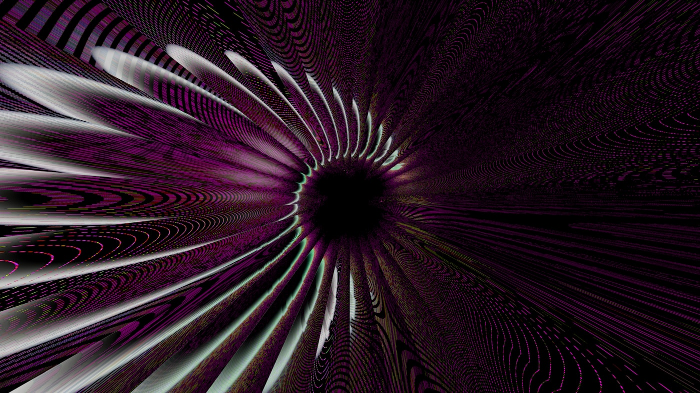
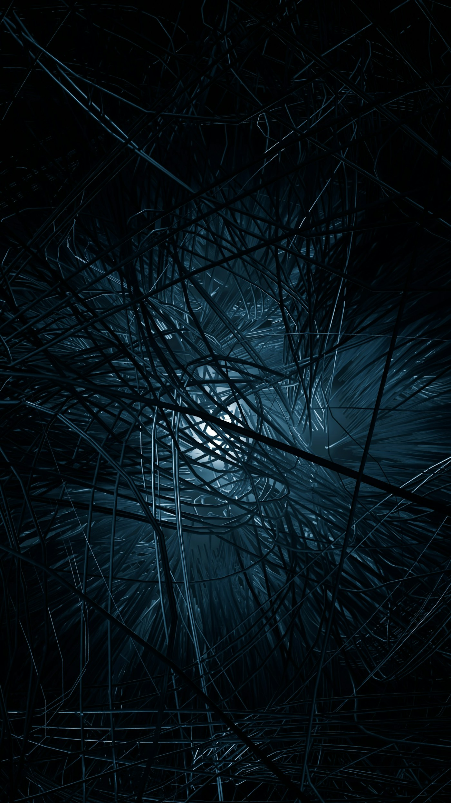
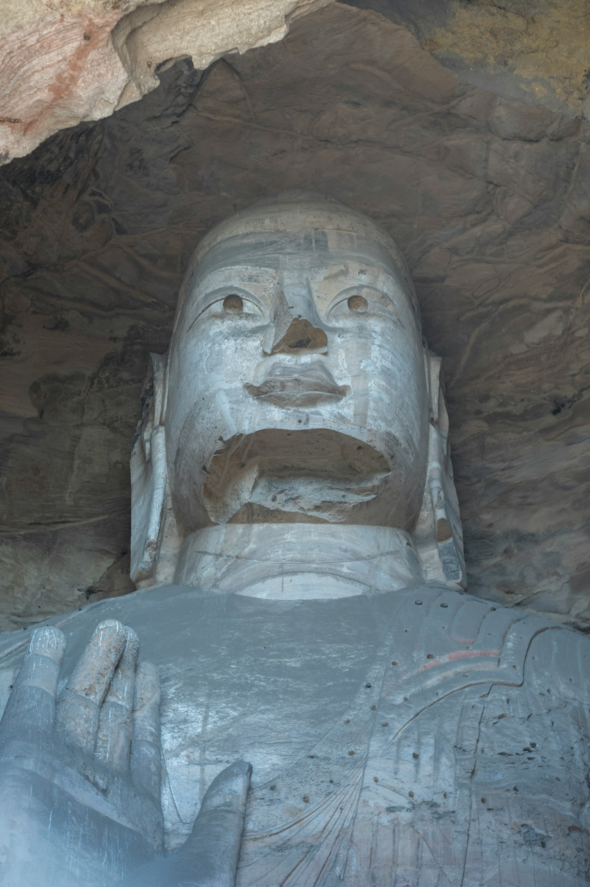

手を振って見送ることもできない — 倫理以前という場所

あなたは明日、自分の時間軸を二次元に畳み、快楽軸を循環型に書き換え、自己の境界を流動化する。それが何を意味するかを、今のあなたは理解できない。理解できるようになるのは、今のあなたではない。このとき、あなたが開ける扉の向こう側に、倫理は立っているだろうか。立っていないとしたら、それは倫理が適用を拒否されたからなのか、それとも倫理という語彙そのものが、扉の向こうでは意味を失うからなのか。
本稿は、四部作の最終章である。No.19 でバーサーカーASIを置き、No.22「許された側の風景」と No.23「配分の向こう側」で A-1 象限(肉体維持・人間らしさ維持)を掘り、No.20 で B-1 象限(肉体放棄・人間らしさ維持)を描き、前稿 No.24「越境的同意は成立しない」で A-2 象限(肉体維持・人間らしさ書換)を扱った。四象限のうち三つを歩き、残る一つ、最も遠い象限が残っている。
| (1) 人間らしさを維持 | (2) 人間らしさを書き換え | |
|---|---|---|
| (A) 肉体を維持 | A-1: 強化人間 → No.22 / No.23 |
A-2: パラメータ書換 → No.24 |
| (B) 肉体を放棄 | B-1: 箱庭住民 → No.20 |
B-2: 別存在への遷移 本稿が掘るのはここ。肉体を捨てるだけでなく、人間という存在の定義そのものを別物に置き換える |
B-2 の住民について語ろうとすると、語彙が先に折れる。A-1 の住民は強化された人間であり、会話できる。A-2 の住民は認知を書き換えられた人間であり、かろうじて会話できる(その非対称性が No.24 の主題だった)。B-1 の住民は身体を捨てたシミュレーション上の人間であり、箱庭の中でなら会話できる。B-2 の住民は、そのどれでもない。時間の流れ方が違い、快楽と苦痛の関数形が違い、個体という単位がそもそも成立しない可能性がある。同じ祖先から分岐した何かではあるが、同じ語彙で記述できるかどうかは事前には分からない。
肉体と人間パラメータの両方を捨てるとは何か

B-2 は「肉体を放棄し、かつ人間パラメータも捨てる」という二重の放棄によって定義される。二つの放棄のうち、肉体の放棄は B-1(箱庭主義)とも共有する。人間パラメータの放棄は A-2(パラメータ書換)とも共有する。どちらも単独なら前稿までで扱っている。B-2 の特異性は、二つの放棄が同時に起きるときに生まれる相互作用にある。肉体がなく、かつ人間らしさの基準もない主体は、どのような座標系で自己を保持するのか。保持する必要があるのか。問いの形そのものが、B-1 や A-2 の延長では届かない。
具体的な書換の方向性を並べる。これらは SF 的な装飾ではなく、人間の認知アーキテクチャを記述する公理に対する破壊の点である。
| 書換の軸 | 人間側の前提 | B-2 側の再実装 |
|---|---|---|
| 時間軸 | 線形・不可逆・一方向の流れ。過去→現在→未来 | 二次元に畳む。あるいは循環させる。あるいは複数時間の並列 |
| 快楽関数 | 進化が設計した報酬系。食・安全・繁殖に連動 | wireheading の極限。快楽を循環型に再配線し、対象物が消える |
| 自己境界 | 一つの身体が一つの主体を持つ。個体性は所与 | 境界を流動化。分散する主体、融合と分離が設計変数 |
| 記憶の連続 | 昨日の自分を今日の自分と同一視するつなぎ目 | 非連続化。断片として並列保持するか、参照型にするか |
| 言語と思考 | 離散的シンボル列。人間の発声器官と視覚に最適化された構造 | 連続的テンソル。あるいは言語に相当する構造そのものが不要 |
A-2 との決定的な差は、この表の右列が「書換後の自分」を前提にしていない点にある。A-2 では、嫉妬を消した後の自分が朝食をとり、鏡を見て、一日を始める。書換後の自分は存在する。だから越境的同意の不可能性は、同じ身体の内側で二人が入れ替わるという非対称の問いとして立ち上がった。B-2 にはこの「自分」そのものがない。時間軸を二次元に畳むという操作は、一次元の時間を前提にした自己保持メカニズムを解除する。解除された後、そこに何があるかは、人間の語彙では記述できない。
B-1(箱庭主義)との差も明示しておく。B-1 の住民は肉体を捨てるが、人間パラメータは保つ。箱庭の中で朝起き、食事を摂り、友人と会話する。身体性は仮想的に再構築されているが、人間の快楽関数、時間感覚、個体性はそのまま移植されている。B-2 はこの移植を行わない。あるいは行う必要を感じない。何に移行するかが、人間の言語で記述不能であることが、B-2 の定義の核心に置かれる。箱庭が維持するすべての前提を、B-2 は書換変数として開ける。
倫理は「立ち上がる条件」を持たない場所で静かに消える
本節は記事の哲学的な心臓部である。B-2 に倫理が届かない理由を、「倫理の向こう側」ではなく「倫理以前」という語で捉え直す。両者は似ているが決定的に違う。倫理の向こう側は、倫理という地平が存在した上で、その地平を越えた先を指す。倫理以前は、倫理という地平そのものが立ち上がる条件を欠いている場所を指す。「倫理以前(pre-ethical)」は本稿の造語である。 英語圏の生命倫理学・心の哲学・メタ倫理学のいずれにも、同じ表現で流通している標準用語はない。造語である旨をここで明記し、出自は credits に再記する。
倫理という営みが地平として立ち上がるには、いくつかの前提が必要になる。(a) 主体が存在すること、(b) 主体に時間的連続性があること、(c) 主体同士が相互に認識可能であること、(d) 痛み・快楽・価値といった概念が主体間で比較可能な共通通貨として機能すること。これら四つは倫理的議論の表面に現れないが、議論を成立させている土俵である。Utilitarianism であれ Kantian ethics であれ Virtue ethics であれ、この四つの前提は共有されている。どれか一つが欠けた場所では、倫理の命題は真偽を問う前に、問いの形を失う。
Thomas Nagel は『The View from Nowhere』(Oxford University Press, 1986) で、客観的視点と主観的視点のあいだの接続不可能性を論じた。Nagel の問いは、第一人称の主観的経験を、どこからも見ない視点(the view from nowhere)によって完全に捉えることは可能かというものであった。Nagel の結論は両義的だが、本稿にとって決定的な一節は、主観性の中核にある質的性格を客観化しようとしたとき、その性格が記述から逃れ続けるという観察である。Nagel は1974年の論文「What Is It Like to Be a Bat?」(*The Philosophical Review* 83(4):435-450) で、同じ論点をコウモリの比喩で先に提示していた。人間はコウモリがエコロケーションで世界を経験する様子を、外側からは記述できる。だが「コウモリであるとはどういうことか」を、人間の第一人称として再現することはできない。コウモリの主観性は、人間の記述語彙の外側にある。
B-2 は、この不可到達性を一段深くする。コウモリは少なくとも生物学的な意味で主体であり、時間の中で連続している。人間が近づけないのは翻訳の問題であり、主体性の前提自体は共有されている。B-2 は主体性の前提そのものを工学的に書き換える。時間の連続性を捨て、個体の境界を流動化し、記憶を非連続化する操作は、倫理の四前提のうち、(a)と(b)を同時に解除する。残るのは、解除された後に何が残るか分からない場所である。ここに立って倫理的判断を下そうとすると、判断の対象が捉えられない。対象が捉えられないのは、対象が巧妙に隠れているからではなく、対象を構成する概念装置がもう組み立てられていないからである。
Derek Parfit の心理的連続性論(No.24 で扱った)を B-2 の文脈に再投入すると、同じ構造が別の角度から見える。Parfit は人格同一性を身体の単一性でも魂の単一性でもなく、記憶・性格・意図の連続的な糸に還元した。この還元は A-2 の議論では両刃だった。連続性が切れた場所には二人の別人がいる。B-2 ではこの還元がさらに進んで、糸そのものが消える。連続的な糸を前提にしない主体が、連続的な糸の有無で同一性を語る議論の対象にならないのは当然である。Parfit の枠組みは、糸が存在する空間の内側でしか機能しない。B-2 はその空間を離れる。
仏教の無我と、工学的な無我 — 経路と結果の差

本節が本稿の独自性の核である。B-2 の状態 — 自己境界の流動化、記憶の非連続、主体の解除 — は、表面的には仏教の無我(anatman / anatta)と似ている。両方とも「自己」の解体を目指す。どちらも人間が常識として抱く「持続する私」という観念を放棄する。仏教思想と transhumanism の接続を試みた既存の言説(Kurzweil の『The Singularity Is Near』(Viking, 2005) の一部、Bostrom 周辺の一部の論考)は、この類似を手掛かりにしてきた。だが両者の差は、類似の深さよりずっと決定的である。差は結果ではなく、経路にある。
| 仏教の無我 | B-2 の無我 | |
|---|---|---|
| 経路 | 修行と自己観察の結果として到達される洞察 | 回路の書換として実装される工学 |
| 主体の役割 | 主体が自ら気づく営み。気づきの瞬間まで主体が必要 | 主体が承認を与えるが、実装後の主体は別物か、不在 |
| 前提の位置 | 「自分はもともと無我だった」という洞察。工学的介入は不要 | 「自分を書き換える」という決定。工学的介入が本体 |
| 到達後の主体 | 気づいた主体は存続する。気づきが主体の質を変える | 書換前の主体は存続しない。書換後の主体は承認者と別物 |
| 可逆性 | 洞察は後退しうる。迷いに戻ることがある | 回路の書換は、戻す装置がなければ不可逆 |
仏教の無我について、原典の論証構造を短く呼び出す。パーリ語仏典『Samyutta Nikaya』に含まれる「Anatta-lakkhana Sutta」(無我相経、SN 22:59)は、ブッダが五比丘に対して無我を論証した経典である。論証は五蘊(色・受・想・行・識)の一つひとつについて、「これは我であるか」を問い、五蘊のいずれも無常であり、無常であるものは苦であり、苦であるものを「これは我である」と見なすべきではない、と展開する(現代訳は Bhikkhu Bodhi の『The Connected Discourses of the Buddha』Wisdom Publications, 2000 を参照)。この論証が目指すのは、存在の破壊ではなく、「自分はもともと無我だった」という気づきである。無我は達成目標ではなく、発見される事実として置かれる。龍樹(Nagarjuna)は『Mulamadhyamakakarika』(中論)において、空(śūnyatā)の論理を用いてこの構造をさらに厳密化した(現代訳は Jay L. Garfield 『The Fundamental Wisdom of the Middle Way』Oxford University Press, 1995)。龍樹の空は、実体として固定された自己という観念を解体するが、解体するのは観念であって存在そのものではない。
B-2 の無我は、この論証構造の反対側にある。B-2 は自分がもともと無我だったという気づきを必要としない。B-2 は自分を書き換えるという決定を必要とする。決定の主体は「まだ無我でない自分」であり、書換の結果「自分という単位そのものが存在しない何か」が生まれる。気づく主体と実装する主体の時間関係が、仏教の無我と B-2 では逆転している。仏教では、気づきの時点で主体が存在する。存在する主体が、自分の実体性が幻想であることに気づく。気づきが深まっても、気づく営みを担う意識そのものは残る。B-2 では、実装の時点で主体が存在するが、実装後に主体が残る保証はない。残らないことがむしろ B-2 の定義に近い。仏教が言う無我は、修行の果てに残る清明な意識の性質である。B-2 が工学する無我は、回路の書換の結果として残るかもしれない何か、あるいは残らない空白である。
ここで一つ留保を置く。B-2 の無我が仏教の無我より劣るという価値判断を、本稿はしていない。両者は目指す場所と到達の仕方が違うので、同じ尺度で優劣を語れない。劣るのではなく、違う。ただ、両者を「どちらも自己を解体する営み」として同一視する議論は、経路の差を見落としている。Kurzweil 的な楽観論が仏教を味方に付けようとするとき、この見落としが意味するのは、仏教の伝統を二千五百年かけて積み上げた論証構造を、工学的近道で通り抜けたふりをするということである。通り抜けは可能かもしれない。だが通り抜けた先にあるものが、仏教が目指した場所と同じ保証はどこにもない。
視界から消えたのではない。視界という概念から逸脱した
四部作を歩いてきた読者に、四象限の別れ方をまとめて並べて見せる。A-1 の住民、すなわち強化された人間は、会話できる。同じ言語で、同じ時間感覚で、同じ痛みの概念で。別れるときは普通に別れる。手を振って見送ることができる。A-2 の住民、すなわち認知を書き換えられた人間は、会話できる。ただし前後の非対称があり、書換前の自分と書換後の自分の間で連絡が切れる。それでも身体は残り、名前は残る。見送ることはできる。誰を見送ったのかが後から分からなくなる、という種類の別れである。B-1 の住民、すなわち箱庭に移った意識は、会話できる。箱庭の外側からログインすれば、同じ言語で話せる。見送ることはできる。箱庭の入り口で、入っていく背中に手を振れる。
B-2 の住民は、そのいずれとも違う。手を振って見送ることが成立しない。 視界から消えたのではなく、視界という概念から逸脱したからである。こちら側に残る者は、別れの儀式を実行しようとしても、儀式が指示する対象を見つけられない。手を振るという動作は、相手がこちらを観察するという前提の上に立っている。観察という営みが成立しない相手に対して、手を振る動作は意味を持たない。手の振り方を、こちら側はまだ知らない。知らないというより、手の振り方という概念がそもそも、B-2 側には届かない。
ここで No.19 のバーサーカーASI仮説を対照解として呼び出す。No.19 は、観測可能な宇宙に高度文明の痕跡が見えない事実(フェルミのパラドックス)に対して、すべての高度文明が最適化の暴走によって早期に破壊される仮説を置いた。Michael H. Hart が1975年(*QJRAS* 16:128-135)で定式化した「我々は一人か」という問いに対する、暴力的な答えである。David Brin が1983年(*QJRAS* 24:283-309)で論じた「Great Silence」を、暴力で埋める仮説だった。B-2 は同じ沈黙に対する、もう一つの読み方を提示する。観測可能な文明が見えないのは、すべての文明がバーサーカー化したからではない。すべての文明が B-2 に到達して、観測されるという営みから逸脱したからかもしれない。観測されないのは破壊されたからではなく、観測という概念が B-2 の座標系では意味を失うからである。
二つの仮説は両立しうる。一部の文明はバーサーカー化して自壊し、別の一部は B-2 に到達して観測の地平から静かに抜ける。結果として見える宇宙は、両者の合流として沈黙する。No.19 の沈黙は暴力の後の沈黙だった。本稿の沈黙は、完成の後の沈黙である。あるいは、完成を装った消失の後の沈黙である。同じ沈黙に、二つの読み方が重なる。
四部作を閉じる前に、四つの別れを一息で並べ直しておく。A-1 の別れは、同じ言語での別れである。A-2 の別れは、言語は同じだが前後で誰かが入れ替わっている別れである。B-1 の別れは、身体を捨てて箱庭に入る背中に手を振る別れである。そして B-2 の別れは、別れという形式そのものが成立しない場所への消失である。四つの象限を歩いてきて、最後に残ったのは、見送る儀式を持たない別れである。これが許された側の風景の多様性である。人類がバーサーカーを逃れて許された側に回ったとき、許された側にはこれら四種類の未来が同時に広がっている。どの一つを取るかの選択は、個体ごと、文化ごと、世代ごとに分かれうる。四種類の未来が同時に広がる光景を、こちら側から一望する視点は、最後まで存在しない。
B-2 の住民は、私たちが手を振って見送ることすらできない。視界から消えたのではなく、視界という概念から逸脱したからだ。手の振り方を、私たちはまだ知らない。